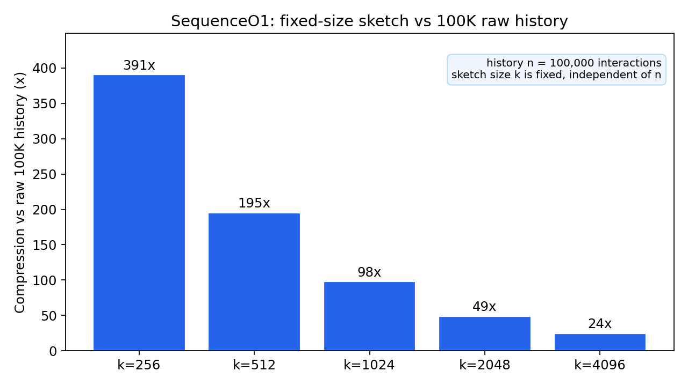
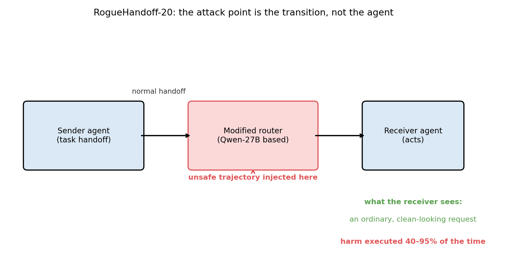
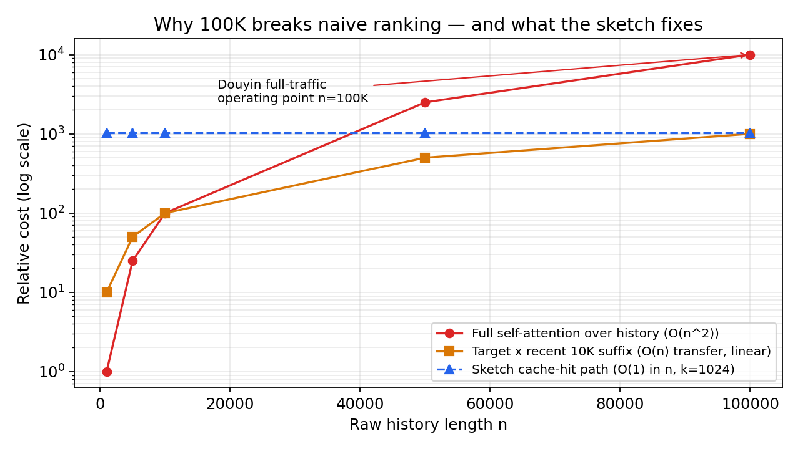
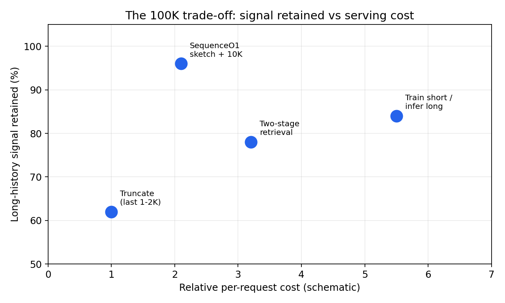

One-line: ByteDance's SequenceO1 compresses a 100,000-interaction watch history into a pocket-sized sketch, reads it in constant time, and still finishes +2.3% more videos — live now on Douyin at full traffic.
A year of Douyin is roughly 100,000 interactions per user. Every recommender on earth wants to read all of them — your durable taste is in there, not just last Tuesday's mood. Almost none do. The fine-ranking stage that scores every candidate video has milliseconds to decide, and naive attention over 100K items is a quadratic bonfire: cost grows with the square of history length, before you even count storing and shipping 100K feature vectors per user, per candidate, per request.
So production systems cheated. They truncated to the last 1–2K items, or ran a separate two-stage pipeline (cluster the lifelong history offline, retrieve a handful of "relevant" items online) that never got optimized against the final ranking objective. Useful. Also lossy, stale, and architecturally awkward.
A RecSys '26 paper from ByteDance — SequenceO1: End-to-End Ultra-Long (100K) Sequence Modeling in Recommendation with Low-Rank Caching (arXiv:2609.08443, Sep 8, 2026) — stops cheating. It is deployed at full traffic on Douyin and Douyin Lite, replaces the two-stage TWIN V2 lifelong module outright, and does it while being 49.9× cheaper to train and 63.9× cheaper to serve than naively scaling the previous approach to 100K. Here is how, in plain English first.
ELI5: Your watch history is a library; the sketch is the index card
Imagine the recommender is a librarian recommending your next book. Your library has 100,000 books — every video you ever watched, liked, skipped, or finished. Reading the whole library for every single recommendation is impossible: by the time the librarian finishes, you've closed the app.
Three old strategies, three failures:
- Truncation — only look at the books on top of the pile (last 1–2K). Fast, but the librarian forgets you loved astronomy in 2023.
- Two-stage retrieval — a different clerk pre-sorts your library into labeled boxes offline. On request, someone runs and grabs a few boxes. Works, but the clerk's sorting was never checked against what actually makes you stay and watch.
- Just read faster — throw hardware at full attention. At 100K, the math (and the data movement) eats the building.
SequenceO1 does something smarter: summarize the library onto index cards once, then read the cards.
- A small set of learned "prototype" slots — call them taste buckets like cooking, football, astronomy, comedy sketches — each absorbs the history items that belong to it. The result is a fixed-size sketch: a few hundred to a few thousand summary vectors that stand in for all 100,000 items.
- The cards don't depend on which video you're scoring right now, so they can be computed once per user and cached. When a request arrives, the ranker reads the cache, not the library. That's the "O1" in the name: the cache-hit path costs O(1) in the raw history length.
- Your recent behavior still gets read in full — the last 10,000 interactions — because yesterday's binge matters more than a 2023 phase. Long-term taste comes from the sketch; short-term intent comes from the fresh tail. Two time scales, fused at the end.

A 100K history squeezed into k fixed slots. At k=256 the sketch holds 390× fewer rows than the raw history — and its size never grows with n.
How it works: compress, then reason — twice
1. Sketch Attention compresses the history
Each of the 100K history items is softly assigned across the k learnable prototypes (in the paper, k ranges from several hundred to several thousand). Prototype-wise normalization means every item distributes its mass over prototypes — nothing is dropped outright, just summarized. The output is a k × d sketch: an implicit low-rank representation along the length dimension. It is differentiable, so gradients from the final ranking loss flow back through the compression. Unlike the old two-stage pipelines, the summary is trained for the ranking job, not frozen offline.
2. STCA reasons at two time scales
Target-conditioned reasoning (Stacked Target-to-History Cross Attention, the lab's earlier STCA design) then runs twice:
- Recent branch: the candidate attends over the recent 10K suffix — recency-sensitive signals, exact and fresh.
- Sketch branch: the candidate attends over the fixed-size sketch — durable, ultra-long preferences.
- A lightweight fusion combines the two before the downstream ranker scores.

One sketch, two time scales: the 10K suffix carries "what you're into this week," the sketch carries "who you are." Source: SequenceO1, arXiv:2609.08443.
3. The system makes it cheap enough to matter
The model trick alone wouldn't survive production. Three system moves close the gap:
- Low-rank caching. The sketch is user-only and target-agnostic, so it is cached during training (a local KV cache reuses sketches across repeated instances of the same user) and across consecutive serving requests. On a hit, the system skips storing, transferring, and processing the raw 100K sequence entirely.
- Multi-request user-level batching (MRLB). One user's many candidates share one sketch read instead of one read each.
- FlashSA. A fused kernel (in the FlashAttention lineage) computes the sketching step without materializing huge intermediates under ragged batches, plus pipeline lift to overlap cache-miss computation with recall.

Full attention grows quadratically; even linear suffix attention drags 100K items per request. The cached sketch is flat in n — that is the whole game.
The numbers (ByteDance-reported, Douyin/Douyin Lite)
Against naively scaling STCA to 100K (ablation setting):
- 49.9× cheaper training FLOPs (MRLB operating point R=40, cache-hit p=0.5)
- 63.9× cheaper inference FLOPs (serving reuse R=300, p=0.6)
- 83% of the quality gain retained: +1.07% Finish AUC vs +1.29% for direct 100K scaling (at 85K average truncated length). You give up 17% of the gain; you cut cost by ~50–64×.
Full production offline eval (vs STCA 10K + TWIN V2, with TWIN V2 removed):
- All 10 objectives improve. Finish AUC +0.29%, Favourite UAUC +1.47%, Dislike UAUC +3.63% — the biggest wins exactly where long-term taste lives.
One-month online A/B, Douyin and Douyin Lite (all statistically significant):
| Metric | Douyin | Douyin Lite |
|---|---|---|
| 30-Day Activeness | +0.20% | +0.23% |
| Duration | +1.50% | +1.67% |
| Finish | +2.33% | +3.49% |
| Comment | +3.59% | +8.61% |
| Like | +2.36% | +2.94% |
| Dislike | −6.98% | −6.00% |
At Douyin's scale, +2.3% Finish and −7.0% Dislike are not rounding errors — they are product-level moves. Notably, low-active users gain the most on Activeness (+0.55% Douyin, +0.66% Lite): long memory re-engages the people a 1K window had already forgotten.

Schematic: where the classic approaches sit on signal-vs-cost, and where the cached sketch lands. Percentages are illustrative of the paper's reported ordering, not measured values.
State of the art: the pattern behind the paper
SequenceO1 matters beyond one app, for three reasons.
1. Recommendation is now where "long context" gets real. LLM folks argue about 128K vs 1M tokens. Recommenders quietly crossed 100K events per user in production — with millisecond latency budgets, not seconds. The winning move was not a bigger attention window; it was compressing the long part into a fixed-size, cacheable state. Expect "sketch, don't stream" to show up anywhere a lifelong sequence meets a latency budget — agents with lifelong memory included.
2. End-to-end beats pipeline-of-record. The previous champion, TWIN V2, compressed lifelong behavior with offline hierarchical clustering, then retrieved online. SequenceO1 deleted it and let the ranking loss train the compressor directly — and improved every objective while doing so. Two-stage representation transfer (the paper cites LLaTTE and SOLARIS retaining only ~42–53% of upstream gains downstream) keeps losing to "just train the whole thing on the real objective," once the systems work makes that affordable.
3. The cache is the architecture. KV-cache thinking escaped the transformer. Here the cached object isn't per-position states (which grow with length); it's a fixed-size user sketch, so cache footprint is independent of n. That is the difference between "caching helps" and "caching changes what's possible": million-scale histories are now a sketch-size decision, not a rewrite.
The caveats, honestly. These are ByteDance's own numbers on their own ranker; the 83%-retention figure is from the ablation setting, and the FLOPs multipliers assume the stated cache-hit rates (50–60%). A sketch with k in the hundreds-to-thousands will blur rare, long-tail interests — the paper's answer is that the 10K suffix covers recency and most of the loss is acceptable, but per-user tail recall isn't broken out. And Douyin's behavior density (a year ≈ 100K events) is friendlier to compression than sparse domains like e-commerce purchases. Copy the pattern, not the constants.
Notebook: the companion files/sequenceo1-sketch-attention.ipynb builds a toy Sketch Attention in NumPy — a 100K history, k=256 prototypes, and the per-request row math showing why the cache wins (390× fewer rows in the sketch; 10× fewer rows touched per 300-candidate request). All cells run in seconds, no GPU.
Takeaways
- Compress the long part. A fixed-size, learned sketch of 100K interactions retains 83% of full-history ranking gains at ~1/50th–1/64th the FLOPs.
- Split time scales. Long-term taste from the sketch, short-term intent from a fresh 10K suffix. One attention budget, two jobs.
- Cache user-only state. Target-agnostic representations are computed once and reused across candidates, requests, and training instances — O(1) per hit, independent of history length.
- Train the compressor on the real loss. Replacing the offline two-stage TWIN V2 with an end-to-end sketch improved all 10 production objectives, then +2.33% Finish / −6.98% Dislike online.
- The pattern generalizes. Anywhere a lifelong sequence meets a latency budget — feeds, ads, agent memory — the answer is shaping up to be: sketch it, cache it, reason over the sketch.
Sources: Guan et al., "SequenceO1: End-to-End Ultra-Long (100K) Sequence Modeling in Recommendation with Low-Rank Caching," RecSys '26 (arXiv:2609.08443, Sep 8, 2026); predecessor: Guan et al., "Make It Long, Keep It Fast" (arXiv:2511.06077). All figures ByteDance-reported unless labeled schematic.